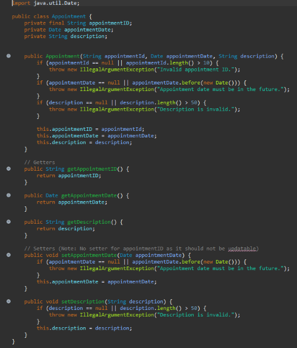
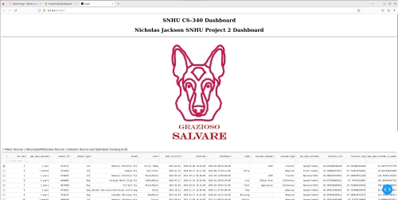

About Me
As a student in Southern New Hampshire University’s Software Engineering program, I have cultivated a strong foundation in software design, secure coding, and systematic problem-solving. My academic work has included a variety of projects that simulate real-world challenges, from building full-stack applications to implementing automated testing and integrating security controls at every stage of development. These experiences have strengthened my technical proficiency in programming languages, database management, version control systems, and Agile methodologies, while also reinforcing my ability to produce maintainable, efficient, and user-focused solutions.
Collaboration has been a consistent element of my growth, as many projects have required effective communication with team members, task delegation, and integration of diverse perspectives. I have learned to translate complex technical concepts into accessible language for both technical and non-technical audiences. This skill has proven critical in ensuring alignment between project requirements and deliverables. I have also developed resilience and adaptability, embracing feedback and leveraging it to refine both my technical output and my approach to problem-solving.
Looking ahead, I plan to further enhance my expertise in cloud computing, DevSecOps practices, and advanced software architecture patterns. I recognize the importance of staying current with emerging tools, frameworks, and security standards in an ever-changing technology landscape. My goal is to graduate from SNHU with a well-rounded and industry-ready skill set that will enable me to design and implement secure, innovative, and impactful software solutions. By continuing to apply secure-by-design principles and focusing on professional growth, I aim to make meaningful contributions in both individual and team-based software engineering roles.
Project Enhancements
Enhancement One: Software Design and Engineering

The artifact I’m showcasing is a 3D scene project that recreates a small bathroom, originally developed in the CS 330: Computational Graphics and Visualization course. The scene features a toilet, a sink, and a light fixture, all constructed using basic geometric primitives like boxes and cylinders. I programmed the scene using OpenGL and applied textures to add realistic surface details. Users can explore the environment using a virtual camera, which is controlled through keyboard and mouse inputs. This project was created to highlight my skills in 3D modeling, texture mapping, and interactive scene navigation within a computational graphics framework.
I chose this artifact for my ePortfolio because it demonstrates my capability to develop interactive 3D environments—an essential skill in both software engineering and computational graphics. The project illustrates my proficiency with OpenGL, where I applied core 3D modeling principles and basic transformations to recreate real-world items in a digital space. The elements of this artifact that most effectively highlight my skills are:
- 3D Modeling: Creating virtual representations of real-life objects like a desk and monitors using basic shapes such as boxes and cylinders.
- Texture Mapping: Applying surface textures to enhance realism, including tiled patterns for the floor and walls.
- Interactive Navigation: Developing camera controls that enable users to move through and interact with the scene dynamically.
The artifact was enhanced by adding detailed comments throughout the code, which serve to explain the purpose and functionality of each section. These comments not only make the program easier to understand for others who may review or maintain it in the future, but they also reflect my ability to write clear, organized, and maintainable code. By documenting key logic, transformation steps, and rendering processes, I ensured that the structure and flow of the program are more accessible and easier to follow, which is a crucial practice in professional software development.
During the enhancement process, I initially planned to transition the project from OpenGL to Blender to take advantage of Blender's advanced rendering capabilities. However, I ultimately decided to shift my focus toward improving and updating the core components of the original OpenGL code instead. While this change in direction was challenging, I believed it was the right decision to better demonstrate my programming skills, particularly in adhering to best coding practices. By refining the original codebase, I was able to highlight my strengths in clean, maintainable code, logical structuring, and effective use of computational graphics principles—key aspects that are essential for a professional software development environment.
Revisiting this project allowed me to appreciate the significance of fundamental practices, such as writing clear and descriptive comments within my code. It reminded me how proper documentation can greatly enhance code readability and ease future updates or debugging. I didn’t encounter many obstacles during the revision process, aside from the initial challenge of remembering the purpose and function of each code block. This experience reinforced the value of thorough documentation and consistent coding practices, especially when returning to a project after some time has passed.
Original Project
Enhanced Project
Enhancement Two: Algorithms and Data Structures
The artifact is a software application developed for the CS-320: Software Testing, Automation, and Quality Assurance course at SNHU. It was originally created during the course to demonstrate skills in writing and executing unit tests, implementing test-driven development (TDD), and ensuring code quality. The project includes core Java classes along with a comprehensive suite of JUnit tests designed to validate functionality, handle edge cases, and ensure the software meets specified requirements. This artifact highlights my ability to create reliable, maintainable code through structured testing practices.
I selected the CS-320 project for my ePortfolio because it demonstrates my ability to apply object-oriented programming principles, implement test-driven development, and ensure software reliability through rigorous unit testing. This artifact includes a comprehensive set of JUnit tests that validate functionality, edge cases, and error handling, showcasing my ability to write clean, maintainable, and well-documented code. Additionally, the project reflects my understanding of software quality assurance by incorporating test fixtures, parameterized tests, and code coverage strategies. These components illustrate my technical proficiency in Java development, problem-solving skills, and commitment to delivering robust, high-quality software—key abilities that employers look for in a software developer. I enhanced this project by incorporating hash maps into the structure of the ContactService, TaskService, and AppointmentService classes. This helped in improving the key operations such as insertion, deletion, and lookup.
I met the course outcomes I planned to achieve with this enhancement. My primary goal was to strengthen my understanding of software testing and quality assurance, and through this enhancement, I successfully applied test-driven development principles and implemented robust JUnit tests. I also demonstrated the ability to analyze, design, and debug code to ensure reliability and maintainability, which aligns with the planned outcomes from Module One. At this point, I do not have significant updates to my outcome-coverage plan, as this enhancement covered my targeted objectives. However, I plan to continue refining my skills in automated testing and code optimization to further support continuous integration and quality assurance in future projects.
Enhancing and modifying the CS-320 artifact taught me the importance of structured testing and how it directly impacts software reliability. I learned how to apply test-driven development more effectively, ensuring that code meets requirements before implementation. This process also reinforced best practices in writing maintainable and modular code, as well as the value of thorough documentation for long-term usability.
One challenge I faced was determining comprehensive test coverage, especially for edge cases and negative scenarios, without overcomplicating the test suite. Balancing readability and completeness in the test code was another hurdle. Additionally, recalling the original design and understanding how new changes would affect existing functionality required careful analysis. Overcoming these challenges helped me strengthen my debugging skills and improve my approach to planning enhancements systematically.
Original Project
Enhanced Project
Enhancement Three: Databases
The artifact is a client-server application developed for the CS-340 course at SNHU, which focuses on building interactive, data-driven applications using a database backend. It was created during the course as part of the final project, where the objective was to design and implement a Python-based dashboard connected to a MongoDB database. The application allows users to query, retrieve, and display animal data from the database in real time, providing features like filtering, searching, and updating records through a simple user interface. This artifact was created during the term to demonstrate skills in database integration, CRUD operations, and client-server communication.
I included this artifact in my ePortfolio because it demonstrates my ability to design and implement a full-stack client-server application, which is a critical skill for software development roles. This project highlights my proficiency in Python programming, database integration using MongoDB, and implementing CRUD operations to manage data effectively. Additionally, it showcases my understanding of RESTful principles and the ability to create an interactive user interface for data visualization and filtering. These components reflect not only my technical skills but also my ability to solve real-world problems by integrating multiple technologies into a cohesive system. This artifact is a strong example of how I can build scalable, data-driven applications, making it highly relevant for future employers. To improve the artifact, I implemented advanced data aggregation and indexing features within MongoDB to improve query efficiency and enhance the overall UX design.
I met the course outcomes I planned to achieve in Module One through the development and enhancement of this project. My goals included applying data management techniques, building a client-server architecture, and integrating a NoSQL database (MongoDB) with a Python application. I successfully implemented these by creating a functional dashboard that performs CRUD operations and allows users to query and filter data in real time. Additionally, I demonstrated software design principles, problem-solving, and testing strategies to ensure the system’s reliability. At this point, I do not have major updates to my outcome-coverage plan because the enhancements fully aligned with my original goals; however, I could further improve the artifact by optimizing the UI for better user experience and adding security features like authentication for more robust client-server interaction.
Enhancing and modifying the artifact taught me the importance of modular design, database optimization, and error handling in client-server applications. While improving the project, I deepened my understanding of MongoDB queries, including how to efficiently filter and retrieve data without overloading the system. I also learned how critical data validation and user-friendly error messages are for ensuring reliability and usability.
One of the biggest challenges I faced was ensuring real-time responsiveness when retrieving and displaying data, especially when handling large datasets. Another challenge was maintaining proper separation of concerns—keeping database logic separate from the user interface to avoid tightly coupled code. Debugging connection issues between the Python application and the MongoDB server was also a key hurdle, but it helped me strengthen my troubleshooting skills. Overall, the process reinforced best practices in software architecture, testing, and scalability.